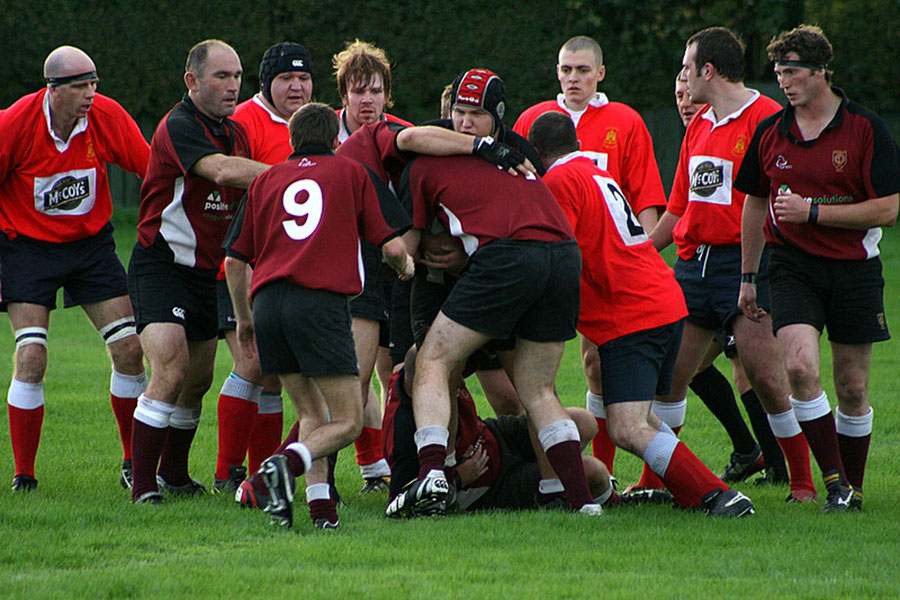

Scrum
Agiles Projektmanagement
Bremen Inside, 17.11.2006
Was ist Scrum?

Was ist Scrum?
- Agile Projektmanagementmethode
- Entwicklung in Iterationen („Sprints”)
- Selbstorganisierende Teams
- Sammlung von Arbeitstechniken
- Wenige Festlegungen > flexibel
- Angelehnt an Lean Production
- Ständige Anpassung der Prozesse
- Ständige Weiterentwicklung der Mitarbeiter
Rollen
- Product Owner > Wir alle
- legt die gemeinsamen Ziele für die Iterationen fest
- priorisiert die zu implementierenden Features
- Team > Design, Szenario, TechScouts, Management, ...
- schätzt die Aufwände der Features
- nimmt den Prioritäten entsprechend Features in den nächsten Sprint
- arbeitet selbstorganisiert im Laufe eines Sprints > keine Vorgaben
- Scrum Master > Projektbetreuer und Projekt Management
- Überwachung der Planung und Entwicklung
- sorgt dafür, dass die Teams produktiv arbeiten können
Arbeitstechniken
- Product Backlog
- enthält Features des zu entwickelnden Produkts
- Features sind genau beschrieben
- Features werden priorisiert und dementsprechend geordnet
- Sprint
- Iteration - Dauer bestimmen wir - 3 Wochen?
- davor: Teams schätzten den Aufwand der Aufgaben
- > Aufnahme der Features und Aufgaben ins Product Backlog
- währenddessen: Teams arbeiten ihre Aufgaben ab
- anschließend: Review und Retrospektive
Arbeitstechniken
- Scrum Meeting
- kurzes Meeting vor jedem Arbeitstag
- Drei Fragen:
- Bist du mit den Aufgaben, die du dir vorgenommen hast fertig geworden?
- Was hast du heute vor?
- Gibt es etwas, das dich am vorankommen hindert?
- > Informationsaustausch im Team
- > frühzeitiges Entfernen von Blockaden
- > Kenntnis über den Stand evtl. Verzug
Arbeitstechniken
- Review
- Feedback zum Produkt
- Vorführung des lauffähigen Produkts
- Überprüfung der Features > Änderungen ins Backlog
- Retrospektive
- Feedback zum Prozess
- Was war gut - was nicht?
- Anpassung/Verbesserung des Prozess
Danke für die Aufmerksamkeit!
Fragen?